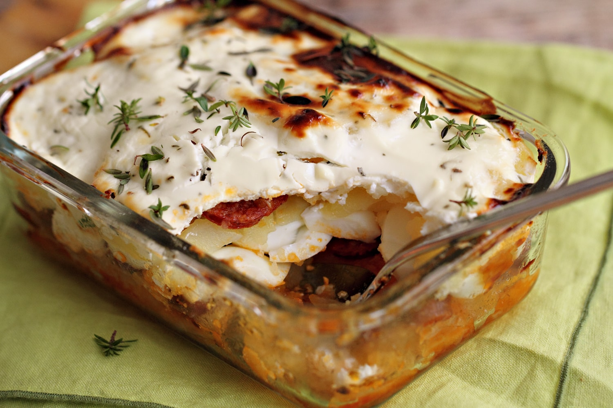
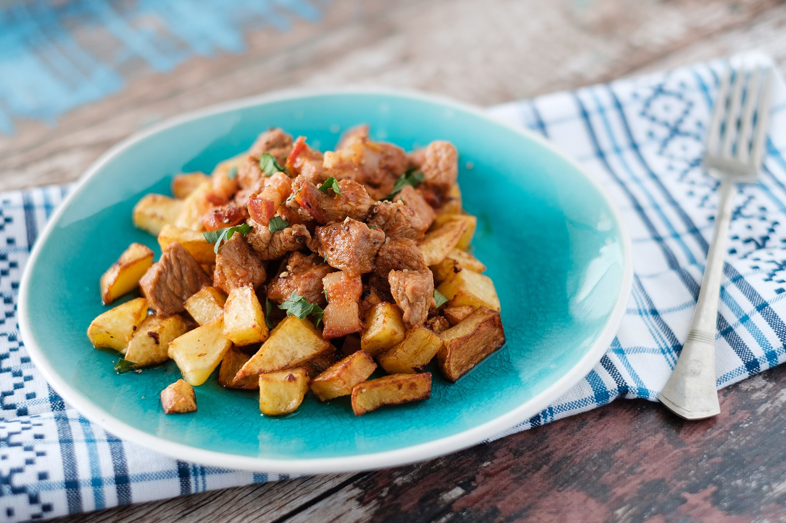
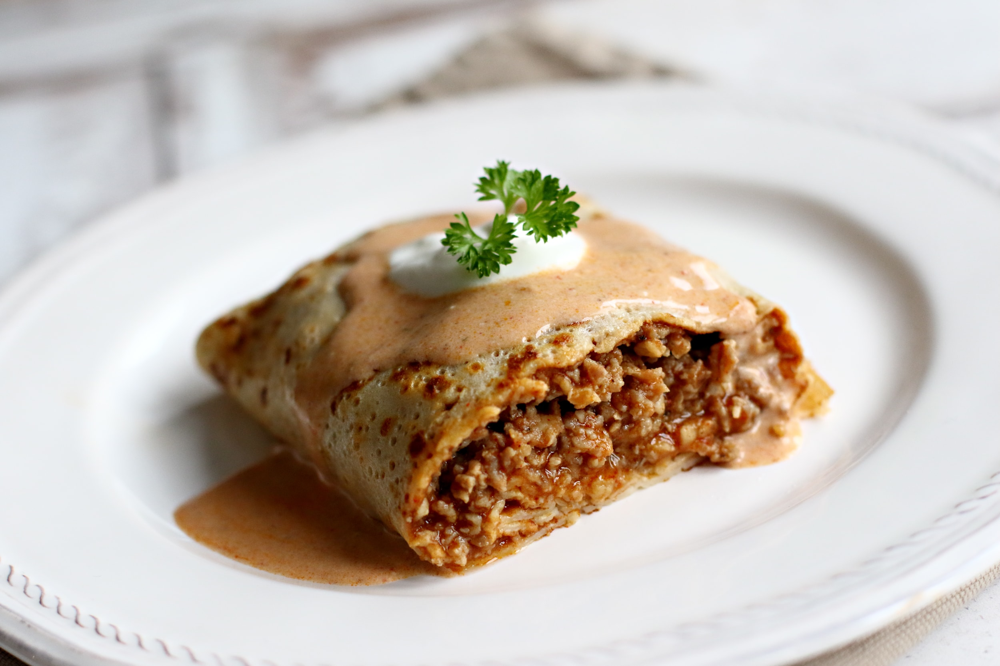
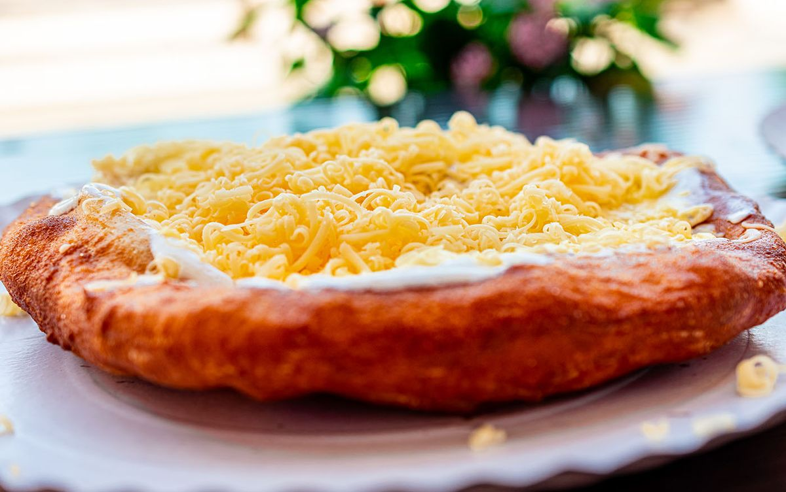

Rakott Krumpli
Sok féleképp lehet színezni, de bárhogy döntünk az alapja garantáltan megismertet a magyar ízek nagyjaival. Tejföl, kolbász és a főttojás-krumpli együttese egytálételként.
Vadas
Elkészítése leginkább marha-sertés hússal történik, de aki a csirke, pulyka mellett dönt, az ízletes mártásnak és puha körítésnek köszönhetően, elveszik a szárnyasokra jellemző “száraz” kifejezés./p>
Brassói
A krumpli és a sertés egyvelege, tovább tökéletesedik abban, hogy bármelyikhez választunk fűszerezést, a másikhoz is passzolni fog.
Hortobágyi
Két hungarikum egyvelege. Friss darálthús és a palacsintatészta sütőben összesütve, és paprikás szósszal megöntve, páratlan ízélményt alkot.
Langos
Akár a kedves mama készíti otthon, télen, nyáron, Vagy hazánk “tengerpartján” ülünk le, bármikor jól esik beleharapni belül puha kívűl ropogós tésztába, amin ott díszeleg saj-tejföl koronája.